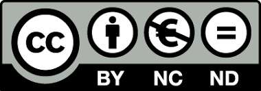

Knowledge Pool
2022-08-29
Welcome

Knowledge pool is a continuously developing database, which is a part of the DAVeMoS project. It aims at gathering concepts and evidence of the systemic impact of transport digitalisation and automation. It is a collaborative effort of DAVeMoS team members who contributed with their expertise, ideas and improvement suggestions regarding the content and design:
- Dr. Martyna Fidler
- B.Sc. Gregor Husner
- B.Sc. Veronika Hebenstreit
- B.Sc. Eva-Maria Unger
- Univ. Prof. Dr. Yusak Susilo
The authors welcome any feedback, questions and contributions that the readers may have. For further inputs please contact the corresponding author Martyna Fidler on the following email address: davemos.library@boku.ac.at.
Legal disclaimers

This work is licensed under a Creative Commons Attribution-NonCommercial-NoDerivatives 4.0 International License.
The authors assume no responsibility or liability for any errors or omissions in the content of this work. The information contained in the knowledge pool is for general information purposes only.
The knowledge pool was last compiled on:
## [1] "29 August 2022"Table of content
- Introduction to the knowledge pool
- Physical road infrastructure
- Highway infrastructure management
- Traffic management
- Digital road infrastructure and connectivity
- Passenger information system
- Multimodal integrated system
- Automated driving
- On-board technology for connected and automated vehicles
- Freight and commercial transport
- Collective mobility vehicles
- Big data
- Shared mobility
- Alternative power sources
- References